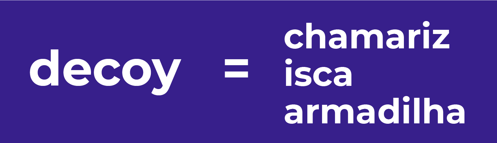
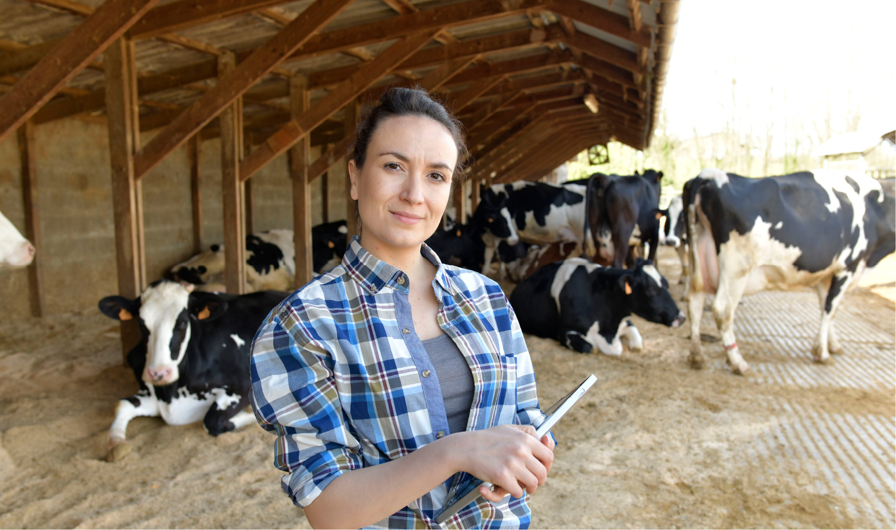
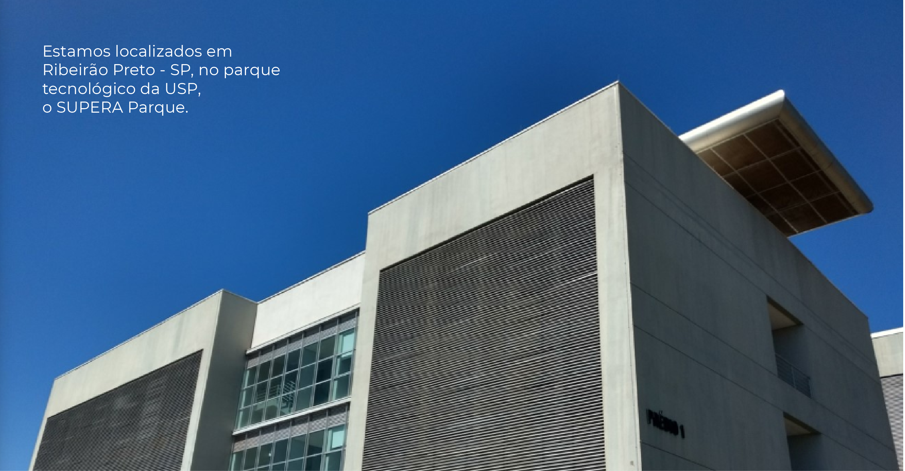
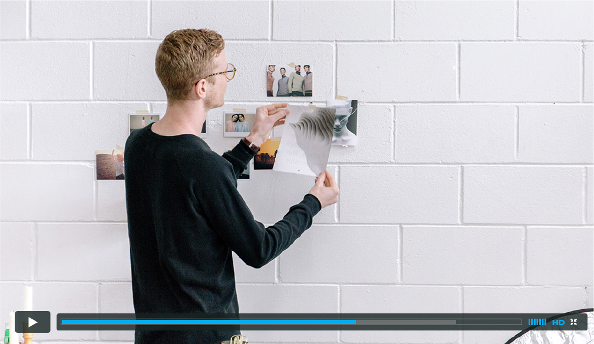

Somos a Decoy, uma startup brasileira
de biotecnologia focada na pesquisa
e no desenvolvimento de produtos para
o controle de pragas em animais de produção.
Analisando o mercado pecuário, partimos da constatação de que o carrapato é um dos maiores inimigos da produção de leite e carne no Brasil e no mundo, gerando um prejuízo incalculável. Foi olhando para este grande desafio que saímos em busca da melhor solução para equilibrar a proliferação desta praga em bovinos e assim auxiliar os produtores a controlar o problema.
Importamos todo o conhecimento adquirido no universo acadêmico de onde partimos e encontramos uma forma muito mais eficaz de controlar pragas, de forma biológica, precisamente estratégica e natural.

Somos a primeira empresa a levar a inteligência do controle biológico para a área de saúde animal. Nossas soluções utilizam conceitos de equilíbrio e manejo integrados dispensando o uso de agrotóxicos, proporcionando um controle mais efetivo e ecologicamente adequado.
Iniciamos com a união de profissionais vindos de disciplinas específicas, como a Biologia e a Economia, mas com um olhar em comum para o questionamento, a inovação e o empreendedorismo unidos para a resolução de problemas. Localizados em Ribeirão Preto, no Estado de São Paulo, hoje um pólo de inovação para setor agropecuário, temos um ambiente extremamente favorável à geração de novas descobertas e soluções inteligentes para o mercado.
A Decoy vai muito além do desenvolvimento de novas tecnologias para fabricação de produtos de controle de pragas, nos envolvemos com todo o processo sempre com foco nos melhores resultados e impacto zero ao meio ambiente.


Através de parcerias bem sucedidas, aprimoramos constantemente nossas teconlogias atendendo desde pequenos produtores orgânicos à grandes propriedades. Cultivamos um relacionamento muito próximo entre os produtores e nossos pesquisadores, somamos conhecimento.
A Decoy em breve ampliará as suas descobertas também para o universo pet, levando para a sua casa soluções livres de toxinas capazes de proteger ainda mais o seu animal de estimação.
Queremos nos consolidar e nos tornar referência global em pesquisa e
desenvolvimento de produtos biológicos inovadores e sustentáveis para o controle
de pragas que aliam tecnologia, ecologia e estratégia.
E também sermos reconhecidos por nosso comprometimento em incentivar no Brasil
uma verdadeira transformação na fabricação de produtos livres de toxinas
prejudiciais à saúde de pessoas, animais e meio ambiente.
desenvolvimento de produtos biológicos inovadores e sustentáveis para o controle
de pragas que aliam tecnologia, ecologia e estratégia.
E também sermos reconhecidos por nosso comprometimento em incentivar no Brasil
uma verdadeira transformação na fabricação de produtos livres de toxinas
prejudiciais à saúde de pessoas, animais e meio ambiente.
Por dentro da Decoy
Carousel title
subtitleCarousel title
subtitleCarousel title
subtitleCarousel title
subtitleCarousel title
subtitleCarousel title
subtitleCarousel title
subtitleCarousel title
subtitle

Laboratório
Colaboração
Todas as soluções desenvolvidas pela Decoy foram concebidas através de parcerias e pesquisas. Trabalhamos em formato de colaboração construindo soluções junto aos produtores.
Nossos técnicos são preparados para atender os parceiros produtores com visitas presenciais e contatos constantes para acompanhar a adequação ao produto quanto a aplicação, eficiência da atuação e resultados nos animais e no ambiente.
A eficiência da Decoy é comprovada diretamente com os produtores. Confira os depoimentos de quem já utilizou os nossos produtos.

Manifesto
A natureza é um constante movimento de vida, uma interação entre meio e seres. Para continuarmos contemplando esse fabuloso espetáculo, acreditamos que chegou a hora de pensar em um futuro diferente.
Queremos multiplicar a consciência de uma nova atitude de respeito, intensificando a conexão de nossas relações com o meio ambiente, com as pessoas e com os animais. Acreditamos que temos uma importante missão como seres humanos, de cuidar e usar o que está a nossa disposição com muita responsabilidade.
A natureza é extremamente sábia e possui a capacidade de prover tudo o que precisamos. Em toda a sua perfeição, ela nos mostra o equilíbrio como instrumento para manter uma harmonia sadia e perpetuar essa dinâmica sem fim. Sempre completa, mantendo tudo em seu devido lugar.
Acompanhamos um movimento de resgate, uma constante busca de pessoas pelo desejo de viver cada vez melhor. Ser sustentável é hoje uma necessidade. Ser sustentável é trazer mais certezas para um mundo onde poderemos viver. Foi olhando para isso que nos aprofundamos na essência do ecossistema para encontrar respostas. Escolhemos utilizar a ciência para potencializar o seu melhor.
Acreditamos que contribuindo com o planeta de forma inteligente, trazendo soluções ecológicas integradas, incentivando a produção mais natural de alimentos e influenciando atitudes positivas, estaremos proporcionando mais saúde para os animais, pessoas e meio ambiente e estaremos construindo sim, um futuro ideal.